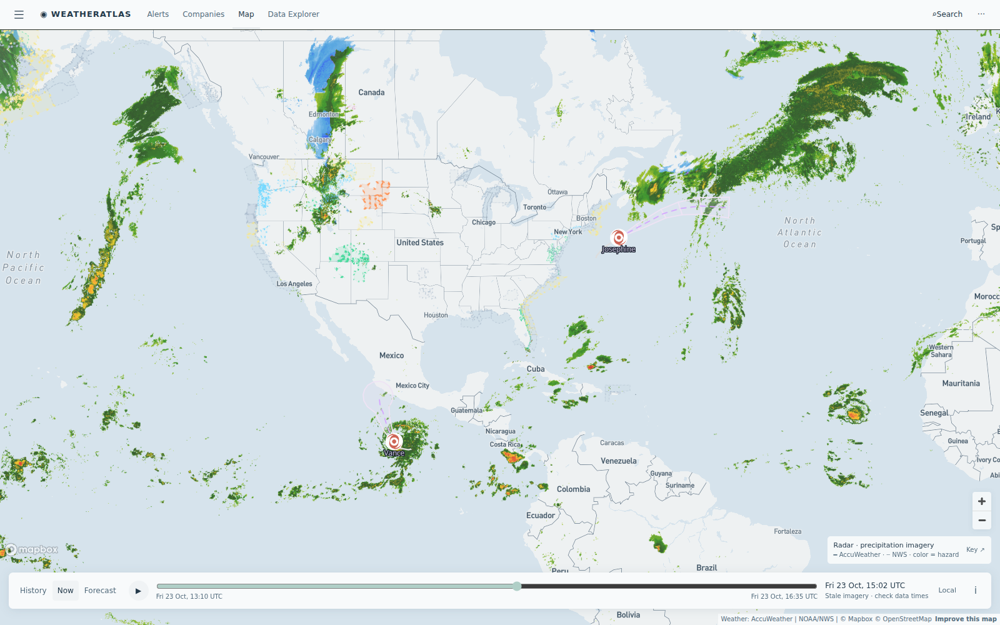

Daily severe-weather intelligence for LNG, refining, offshore, and terminal operators.

Live radar + active alert board from the AccuWeather-powered Atlas — captured ~15:00 UTC today.
| System / region | Status | Energy-asset impact |
|---|---|---|
| Hurricane Vance — East Pacific (Cat 1, 86 mph, strengthening) | HURRICANE | Upgraded to hurricane overnight several hundred miles south-southwest of Acapulco; AccuWeather expects major-hurricane strength this weekend. Pacific-basin tanker routes and Mexico Pacific port ops (Manzanillo, Salina Cruz) face delay windows. No US Gulf threat. |
| First freeze pattern — Oregon coast + Montana high plains | FREEZE | Freeze Warning covers the Oregon Coast Range lowlands (idle LNG terminal site included) tonight; the cold shot reaches the Great Falls renewables corridor with rain and 26-mph gusts — highs near 43F, lows to 31F. Winterization checks, rail/truck logistics, and propane demand start here, weeks before the Gulf. |
| Wyoming wind belt — Wamsutter / Creston / Carbon County | HIGH WIND | High Wind Warnings blanket the Wamsutter and Creston gas fields plus Red Flag fire conditions in Campbell County tonight — compressor stations and workover rigs face stand-down windows; minor Rockies gas flow friction. |
| San Juan basin floods easing — Colorado gas belt | FADING | Flood Warnings on Ignacio Blanco gas acreage (La Plata/Archuleta counties) persist but ease after two active nights; haul roads reopening gradually. Tropical Storm Josephine (Atlantic, 52 mph) and Champi (Philippine Sea, fading) keep APAC LNG lane risk low. |
Today's gap comes from Great Falls, Montana — the first cold shot of the season hitting the renewables corridor. AccuWeather's enterprise feed shows steady rain all day at 70-86% probability, with temperatures sliding from 43F to 31F. The free feed shows a mostly dry day with 0% rain chance in the same hours.
First cold shot of the season today: AccuWeather shows 83% cold rain with highs only 43F, gusts to 26 mph — the free feed says a dry day. Winterization and cold-logistics window starts tonight.
View live brief →Quiet Gulf day: mid-80s, light southerly winds, no marine flags. The live brief carries the same AccuWeather-vs-free hourly comparison for berth operations — updated today.
View live brief →